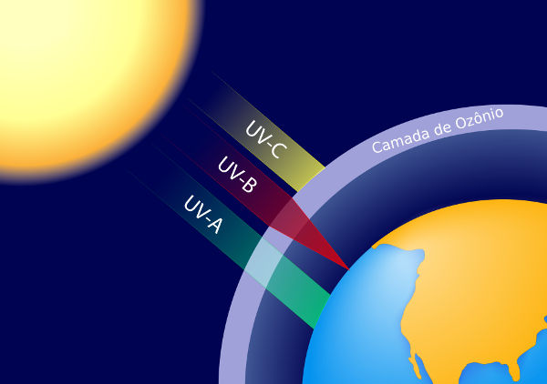

Os raios UV são uma forma de radiação eletromagnética que está presente no espectro da luz solar, com comprimentos de onda mais curtos do que a luz visível. Existem três tipos principais de raios UV, classificados com base em seus comprimentos de onda: UV-A, UV-B e UV-C.
UV-A: São os raios ultravioleta de comprimento de onda mais longo. Eles são os mais comuns e menos energeticamente potentes dos raios UV. Os raios UV-A penetram mais profundamente na pele e são responsáveis pelo bronzeamento da pele e envelhecimento precoce.
UV-B: São os raios ultravioleta de comprimento de onda intermediário. Eles têm maior energia do que os raios UV-A e são parcialmente absorvidos pela atmosfera da Terra. Os raios UV-B são responsáveis pela queimação da pele, bronzeamento, produção de vitamina D e também são um fator importante no desenvolvimento de câncer de pele.
UV-C: São os raios ultravioleta de comprimento de onda mais curto e de maior energia. A maior parte da radiação UV-C é absorvida pela atmosfera da Terra e não atinge a superfície. No entanto, a exposição a fontes artificiais de UV-C, como lâmpadas germicidas, pode ser prejudicial à saúde humana, causando danos aos olhos e à pele.